Plan 45: pinned originals and extracted Ren
Review artifact only. Floor image and derived crop are unreviewed candidates; no owner art acceptance or game mounting is implied. The original floor comparison is wide.
Six expressions
Door

Close couch

Floor game night: unreviewed candidate

Derived close crop — candidate only
Compare the table covering Ren's lower edge and the duck's contact with the blue book. Crop does not alter source geometry.